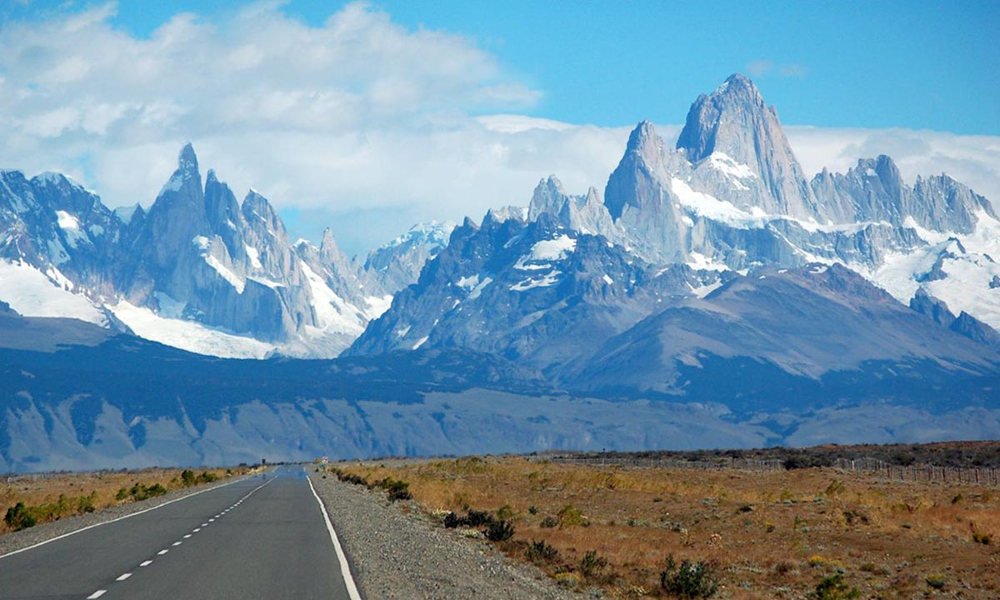

15 Marzo, 2026
El silencio de los Andes
Entre montañas y nubes, descubrí que el mejor mapa es perderse sin prisa...
Leer más →
Entre montañas y nubes, descubrí que el mejor mapa es perderse sin prisa...
Leer más →
Entre montañas y nubes, descubrí que el mejor mapa es perderse sin prisa...
Leer más →Entre montañas y nubes, descubrí que el mejor mapa es perderse sin prisa...
Leer más →
Soy [tu nombre], un alma inquieta que convirtió la carretera en su hogar. Este diario nació entre cuadernos manchados de café y mapas rotos, con la idea de compartir no solo destinos, sino la esencia de viajar sin prisas...
— Tu Nomad
Descarga nuestra Guía Esencial del Nómada con listas de empaque, rutas secretas y consejos para viajar ligero.

Un PDF con plantillas de itinerarios, páginas de diario, mapas en blanco y pegatinas vintage. Imprime y crea tu propia bitácora.